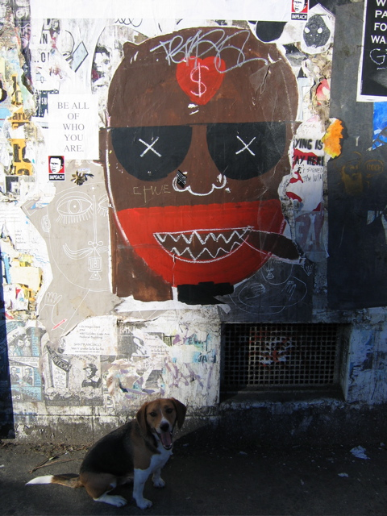

<--Previous
Up
Next-->

Former Mission police station
The eccentric architect who now lives in this former Mission police station on Valencia Street cultivates a free-for-all wall of posters on its blank facade.